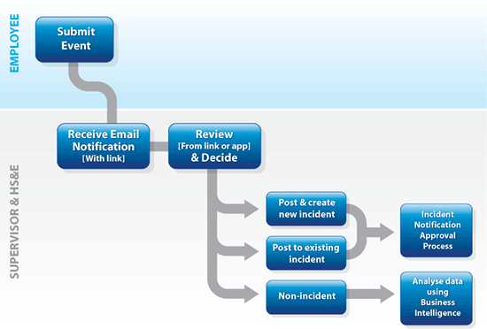

The Event Reporting module is a stand-alone component that is accessible by non core Cority users, such as employees, supervisors and their managers, to quickly record and report accidents and events.
Users can submit Safety, Environmental, Ergonomic, and/or Quality event report types using standalone links, the Portal or myCority.
The specific types of events can be configured and may include: injury/illness, spill or leak, near miss, property damage, report of hazard, or ergonomic assistance request. Specific layouts and workflows are configurable for each event type.
Safety and Environmental events post to Incident, while Ergonomic events post to Audit. A Quality event may be posted to a Nonconformance.
Employees who open the standalone component will not see the Cority menus but will be restricted to creating or editing a single event record. Cority users can display a list of all events, review them, and post valid events to an existing or new incident/audit report.

A different type of event is created automatically when an Environmental finding is deemed to have resulted from a deviation. These Deviation Events are not submitted or posted to an incident, but rather are tracked for reporting purposes only. All deviation records for a reporting period (rolling six months from permit issuance date) will be reported together via Report Writer or forms.
Cority provides functionality to enable Protex AI to automatically add detected safety observations to the system. A subscription to Protex is required, and related fields and actions must be added to custom form layouts. Please contact your system administrator for further information.